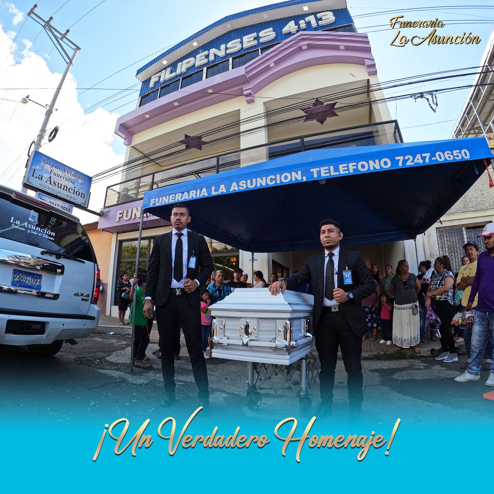

Más de una década acompañando a las familias salvadoreñas en sus momentos más difíciles

Funeraria La Asunción nació del deseo de brindar a las familias de Ahuachapán un servicio funerario que combine profesionalismo, calidez humana y respeto por las tradiciones salvadoreñas.
Desde nuestros inicios, hemos entendido que cada despedida es única y merece ser honrada con dignidad. Por eso, nos hemos dedicado a crear espacios acogedores y servicios personalizados que acompañen a las familias en cada paso del proceso.
Hoy, somos una funeraria de confianza para cientos de familias que han encontrado en nosotros un apoyo genuino durante momentos de pérdida.
Te invitamos a conocer nuestras salas de velación, capillas y todas las instalaciones que ponemos a disposición de las familias
Los valores que guían nuestro servicio cada día
Acompañar a las familias salvadoreñas en sus momentos de duelo, ofreciendo servicios funerarios de calidad con calidez humana, profesionalismo y respeto por sus creencias y tradiciones.
Ser la funeraria de referencia en Ahuachapán y sus alrededores, reconocida por la excelencia en el servicio, la empatía con las familias y el compromiso con nuestra comunidad.
No somos solo una funeraria, somos un equipo de personas comprometidas con acompañar a las familias con respeto, profesionalismo y un trato verdaderamente humano.
Cada familia es única. Nos tomamos el tiempo de escuchar y entender sus necesidades para ofrecer un servicio a la medida.
Salas de velación climatizadas, cómodas y diseñadas para brindar tranquilidad a las familias y sus invitados.
Personal capacitado y sensible, listo para atender con empatía y resolver cualquier necesidad.
Servicio de emergencia las 24 horas del día, los 7 días de la semana. Siempre estamos aquí para ti.
En Funeraria La Asunción, entendemos que despedir a un ser querido es uno de los momentos más difíciles de la vida. Por eso, nos comprometemos a estar a tu lado, ofreciéndote no solo servicios de calidad, sino también un apoyo genuino y respetuoso.
Trabajamos cada día para honrar la memoria de quienes ya no están, brindando a sus familias la paz y tranquilidad que necesitan para despedirse con dignidad.
— El equipo de Funeraria La Asunción
Estamos disponibles las 24 horas para atenderte. Contáctanos ahora.